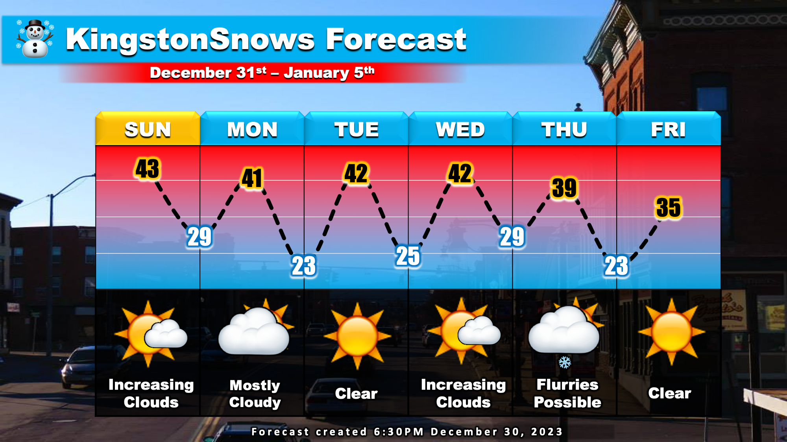

Calm Week Ahead
School Forecast
for Monday January 1st
Last updated: 10:00PM Saturday December 30, 2023
| 0% (Nope) |
|---|
| 100% (Yes!) |
|---|
| 0% (Nope) |
|---|
___________________
10:00PM Update
After a wet and quite stormy December, the month is set to end on a quiet note. As we head into the New Year, generally calm weather will prevail.
Over the next week, we'll see a mix of sun and clouds as generally dry weather persists. The one exception to this will be Thursday. On Thursday a weak storm system will move through New York bringing clouds. Here in the Mid-Hudson Valley, the storm may set off some light flurries or drizzle at times during the day. However, at this time no appreciable rain or snow accumulation is anticipated. Temperatures this week will generally run zero to five drgrees above normal for this time of year with afternoon highs reaching the 40s during the day and overnight lows falling into the 20s.
Other than Thursday's very low storm threat, KingstonSnows is watching a potential storm for late next weekend. The energy that would trigger this potential storm is still very far away over the Pacific Ocean, and won't reach the west Coast until about Wednesday. This potential storm currently has a low chance of bringing us any snow and if it did, snow would likely be light. However, we will watch to see how it evolves as the week progresses.
Next Update:
On Monday
-Ethan
KingstonSnows | Kingston, New York
Website built by Ethan Burwell